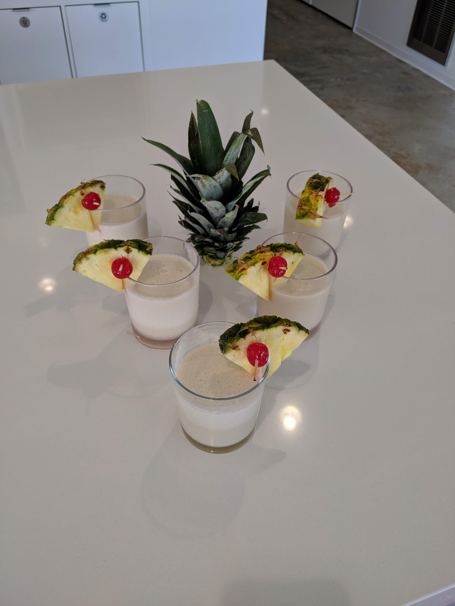
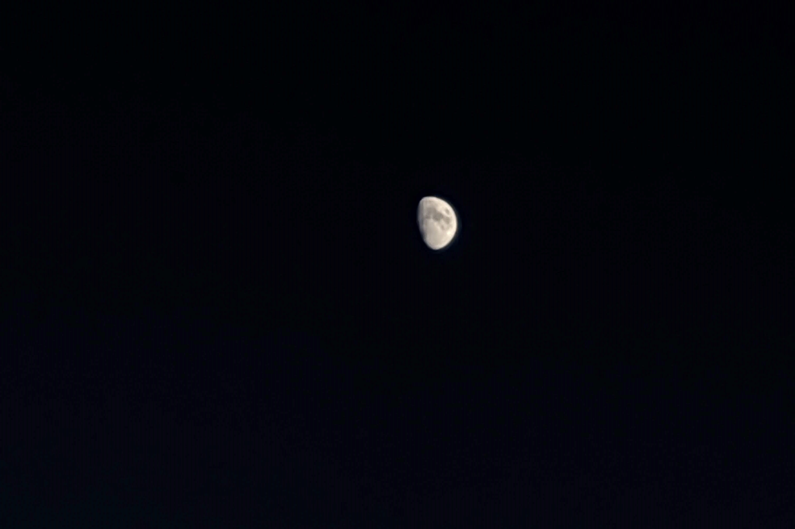

Final day "live tweet"
Today is my last day working at my current job. I want to make sure I don't forget anything, so I'm going to transcribe some of the day's events as they happen.
Starting this post.
Just finished styling the layout using dummy data. I finally got to use CSS Grid for something useful. It was fun playing around with it to learn how it works.
Going to bed.
Getting out of bed.
Track workout!
Just made it home. I wanted to do a mile time trial since I was short on time, but the high school cross country team was on the track. I did three 800m repeats at mile pace instead.
I just found out my freshly-washed shorts that I wanted to wear today have a stain. Dang.
Heading out for my last commute into DC. I'm actually going to miss the metro and reading on the way into work.
Just finished standup. Now to head out to a chocolate store to pick up some assorted chocolates for the office and the security guards.
Dylan just got back with Stachowski's. That was super quick! He could work for Jimmy John's.
I just had a meeting with my boss. I wanted to tell him how much I appreciated working with him. It was very hard for me to say what I wanted to say without making it sound like I was hitting on him. He took it well though. He's a good guy.
Aww, Dylan just swung by with some beers for me! What a pal.
I just pushed my last bit of code! I really hope it works.
Now I'm chatting with a group of coworkers while drinking the aforementioned beers.
A friend made some piña coladas for me! And dang, they look fancy!

11 of us are heading out for happy hour.
Everyone has shuffled out. Time for me to head home.
The moon looks so bright today. I was able to get a decent photo on my phone! I've never been able to do that before. It looks dark because I had to turn the brightness all the way down, but it was still pretty bright out.

Just made it home. That was it. My career as a software engineer is over.
I'm exhausted.
In bed. Feeling like an old fart.
P.S. I appreciate all the people who said they enjoyed working with me. So many people had an impact on me over the years. I'm glad I could make an impact on others as well.